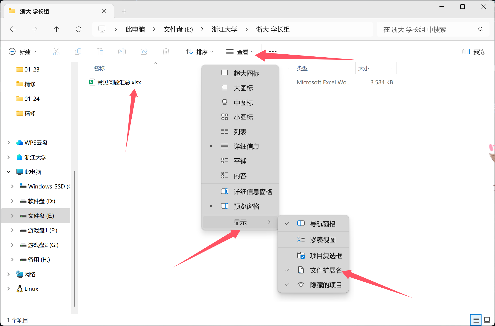

灯下黑——你真的了解计算机的文件系统吗？
或许你已经回答过这个问题了，但是我还想再问一遍：
你开启“显示文件扩展名”了吗？
哦如果你很懵，不知道我在说什么，没关系，接着往下看，你会明白的。
好了明白的同学也往下看！（抓住）
哦！我的数据！——计算机文件系统发展史
如何妥善地保存一份数据始终是人类最喜欢琢磨的问题，不知道你读没读过三体，在卷三中罗辑说到：
把字刻在石头上！
诚心来说，这真的是人类在文件系统上的第一个脚印，我们成功把数据记下来了，就在那块灰扑扑的是石头上，这对我们那生活在非洲大陆的祖先是个了不起的成就。
结绳记事，竹简布绢，无非不是记录载体的升级换代，每一次的升级都意味着存储密度和交换便利性的提升，直到发展到计算机上，我们做的事情本质也没多大区别。
计算机只能看懂0和1，在计算机的存储介质中，我们数据也需要通过0与1表达，通常我们会通过特定的物理状态（比如磁极方向、电压高低等等）来表示，这解决了表达问题，那么写入与读出的问题呢？
在一开始，程序员们只能直接操作存储介质本身！你可以想象在你的小U盘里有一个巨大无比的图书架，上面有非常多本书，而你要手动的在里面翻找出你需要的数据，并且要小心越界，这是一个非常容易出错的过程！
程序员们肯定不能容忍这样及其不要优雅的事情发生在他们身上，文件系统的概念也随之落地成为现实，文件系统本质就是一个约定俗成的组织数据的方式，它们在上层开发者与底层存储介质之间搭建起了便于沟通的桥梁，你可以理解为，你的小U盘里来了一位可爱的图书管理员，她会帮你处理好找书、放书、把书丢掉之类的底层活计，而你只需要告诉她你要处理哪本书就可以了。
这位管理员的加入使得程序员得到了解放，他们再也不需要头痛怎么去摆放书籍，怎么去寻找书籍，他们只需要关心自己需要什么书，然后找管理员要即可。管理员就是一个约定俗成组织数据形式的化身，它以人类易于理解的方式解读那些在硬盘里待着的0和1到底代表什么意思。是你的课程作业，还是你的游戏文件？
抽象与解耦
文件系统的发展过程展示了一个计算机中的一个共识：抽象和解耦。
抽象这部分你应当在《Python程序设计基础》有关于面向对象编程的部分中了解过，而解耦则指的是将原本关联紧密的一系列操作独立开来，使得各个部分都可以各司其职，在文件系统中，“文件”和底层的实际存储原理被解耦为两部分，由程序员控制前者，存储介质（比如硬盘）负责后者，而文件系统在中间负责保证双方沟通顺畅。
如果你想了解更多，可以自行搜索！
再认识一下你的文件系统
在现代操作系统上，常见有以Windows为代表采用的NTFS文件系统与Linux为代表采用的ext系列文件系统。
当然你会想，这和你有什么关系。哦我的朋友，它和你的关系可太大了！你想想，你平常在操作的大部分事情都和文件有关：给别人传一份文档、欣赏你的照片、从网络上下载一款游戏，没有了文件系统，谁来帮你把这些数据从硬盘里拿出来或者存进去呢？
如果你是 Windows 用户，那么你一定知道资源管理器，如果你是 MacOS 用户，那么你肯定会用 访达 (Finder)，他们都是文件系统在软件上的化身，帮助你和文件系统交流。
这里我们要了解几个概念：文件树、目录、路径与文件名。
# Windows文件树
C:\ (C盘根目录)
├── Windows/ # 操作系统核心文件 (DLL, 内核等)
│ ├── System32/ # 64位系统核心组件 (别被名字骗了)
│ └── SysWOW64/ # 运行32位程序所需的库
├── Program Files/ # 64位软件默认安装目录
│ └── Tencent/
├── Program Files (x86)/ # 32位软件默认安装目录
├── Users/ # 用户文件夹根目录 (类似 Linux 的 /home)
│ └── YourName/ # 你的用户家目录 (User Profile)
│ ├── Desktop/ # 桌面
│ ├── Documents/ # 文档
│ ├── Downloads/ # 下载
│ └── AppData/ # 隐藏目录，存放软件配置和缓存 (极其重要)
│ ├── Local
│ └── Roaming
├── ProgramData/ # 隐藏目录，所有用户共享的程序数据
└── Temp/ # 临时文件
# MacOS文件树
/ (根目录)
├── Applications/ # 系统级应用程序 (.app 包)
├── Library/ # 系统级资源、插件、配置
├── System/ # 操作系统核心 (在现代 macOS 中是只读的)
│ └── Library/ # 核心框架 (Frameworks)
├── Users/ # 用户家目录所在的根
│ ├── YourName/ # 你的个人领地 (用 ~ 表示)
│ │ ├── Desktop/
│ │ ├── Documents/
│ │ ├── Downloads/
│ │ └── Library/ # 用户级别的软件配置 (默认隐藏)
│ └── Shared/ # 多用户共享文件夹
├── Volumes/ # 外接设备 (U盘、移动硬盘) 的挂载点
├── bin/ & sbin/ # 基础命令 (如 ls, cd, mkdir)
├── etc/ # 系统配置文件 (如 hosts, ssh_config)
└── dev/ # 设备文件 (在类 Unix 中，硬件也是文件)
- 文件树：正如上面这两块所展示的那样，在Windows和MacOS下，尽管文件系统不同，但是都可以将其梳理为一棵文件树，文件夹和文件是树上的特定节点，除了根目录以外，所有节点都有其所属节点。
- 目录：你肯定会新建文件夹！（肯定会的吧！不许说不会！），实际上文件夹可以等于目录（因为两者都指的是英文里的 directory），所以当我们说“xx文件在xx目录下”的时候，是等价于“xx文件在xx文件夹里”的。
- 根目录：一个文件系统“文件树”的最顶端被称为根目录，比如Windows中我们一般称各个分盘为其根目录（C盘根目录），MacOS与Linux则有一个
\作为其根目录。 - 项目目录：在之后的学习中，你无可避免会看到类似于“进入项目目录”之类的话语，我们通常将其认为是项目文件夹本身，比如在上面有关于Windows的例子中，
Program Files下就有一个Tencent项目目录。
- 根目录：一个文件系统“文件树”的最顶端被称为根目录，比如Windows中我们一般称各个分盘为其根目录（C盘根目录），MacOS与Linux则有一个
- 路径：路径，就是文件在文件系统中的位置的描述，有两种风格，Windows下以
\为分割符（在你的键盘退格键下边），通常为C:\Program Files\Microsoft；而MacOS与Linux则是Unix风格的，以/为分隔符（在你键盘的问号键上），通常为/home/yangshu233- 绝对路径：从文件系统的根目录出发到达目标文件或文件夹的路径，它们的特点是包含根目录，比如
C:\Program Files\Microsoft。 - 相对路径：从当前工作目录出发，描述目标文件或文件夹与你的相对位置，比如如果我在C盘根目录下，
Microsoft文件夹的相对路径应该被描述为.\Program Files\Microsoft\ - 当前工作目录：就是你现在所处的文件系统位置，直观理解就是你资源管理器或Finder当前所在的那个路径！比如当你直接打开C盘，那你的当前工作目录就是
C:\
- 绝对路径：从文件系统的根目录出发到达目标文件或文件夹的路径，它们的特点是包含根目录，比如
- 文件名：字面意思，就是文件的名字，比如你的实验报告Word文档的文件名可能是
姓名_学号_实验报告。- 文件拓展名：其往往跟在文件名后面，是一种身份标识，比如你可能有两个文件都叫做
姓名_学号_实验报告，但是有一份是word文档，有一份是pdf文件，那它们的完整名字就应该分别是姓名_学号_实验报告.docx与姓名_学号_实验报告.pdf。文件拓展名很重要的用途是决定你的电脑如何看待这份文件，以及用什么方式来阅读它！毕竟你不可以用Word文档的方式来打开一个exe可执行文件！
- 文件拓展名：其往往跟在文件名后面，是一种身份标识，比如你可能有两个文件都叫做
显示你的文件拓展名！
强烈建议检查一下你是否开启了“显示文件拓展名”，这非常重要！
Windows：在资源管理器内任意进入到一个目录下，选择“查看-显示”，勾选“文件拓展名”！

MacOS：进入访达的设置，选择“高级”，勾选“显示所有文件拓展名”。